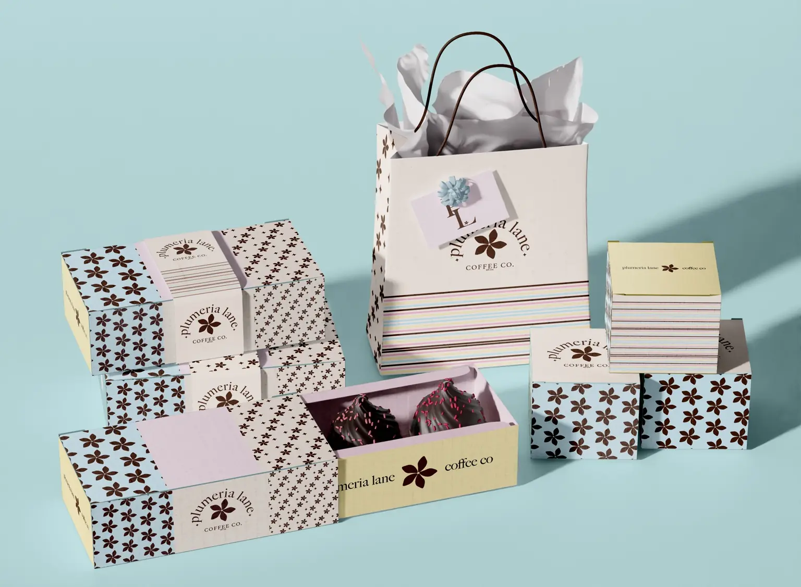
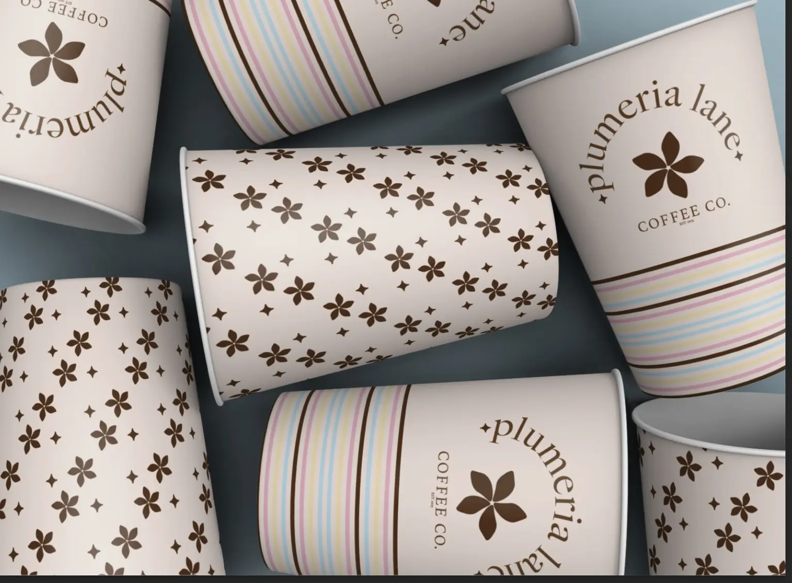
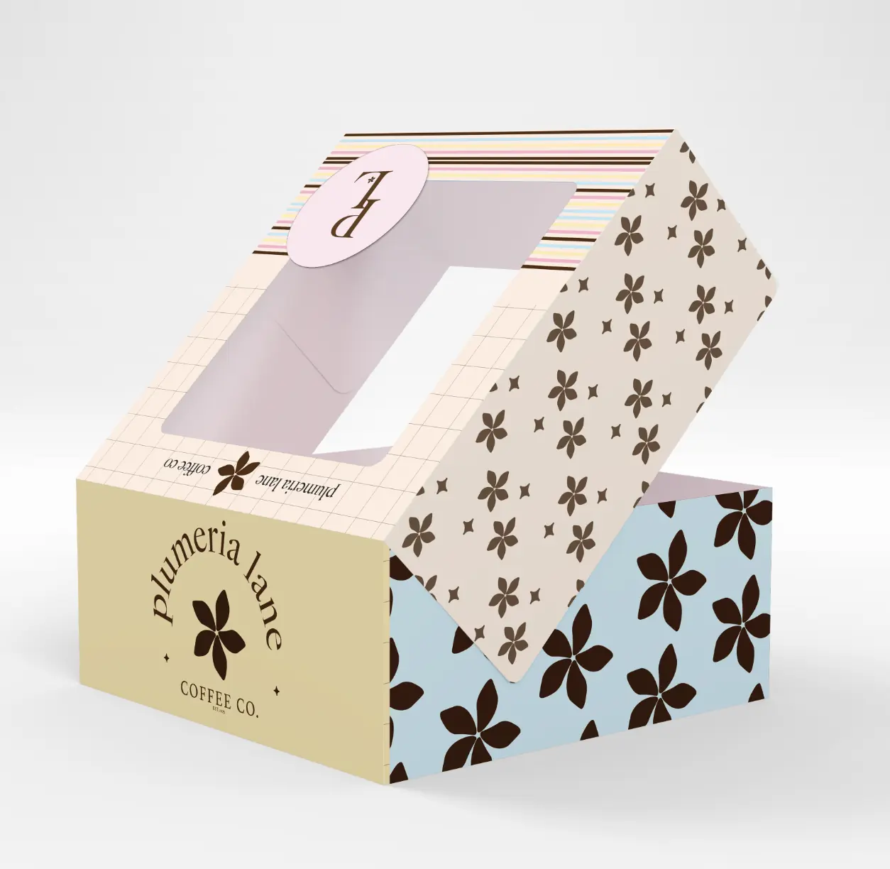
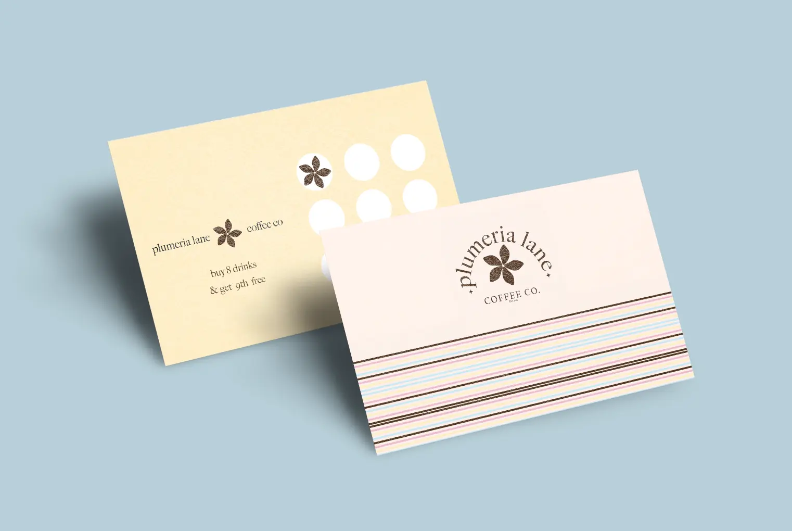
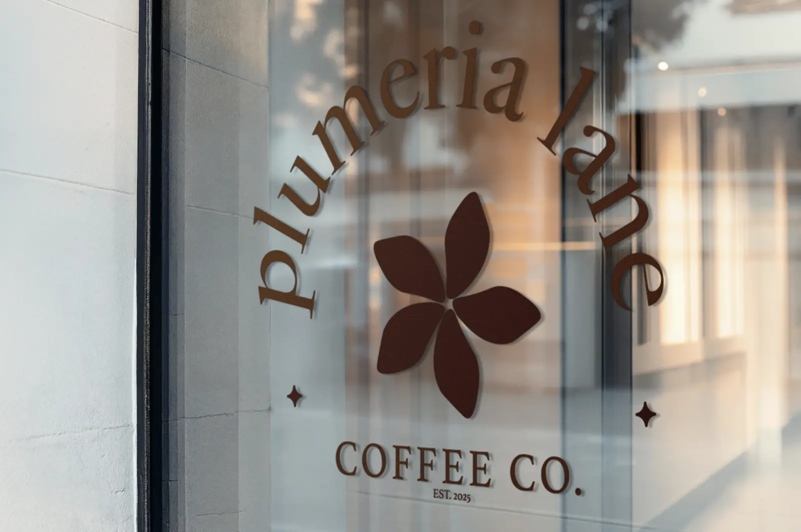

Choosing the feeling
I started with the mood of a coastal coffee stop: warm light, colorful shop details, something sweet in a little box, and nowhere to rush. That feeling guided the soft palette and the brand’s relaxed but put-together voice.
Cafe identity / brand concept / 2025
coffee with
vacation energy
A breezy cafe identity built around soft color, sunny details, and the easy feeling of finding your favorite coffee stop near the beach.

the project
Plumeria Lane is a self-initiated cafe brand concept inspired by beach towns, slow mornings, and the little coffee shops people look forward to visiting on vacation. The goal was to make the brand feel light and nostalgic without relying on the usual palm-tree-and-sunset version of coastal design.
The identity pairs a delicate plumeria mark with warm espresso brown, sky blue, buttery yellow, blush, and narrow multicolor stripes. A flexible family of floral patterns brings energy to the packaging while the refined type keeps everything feeling considered, relaxed, and grown.


Behind the work
I started with the mood of a coastal coffee stop: warm light, colorful shop details, something sweet in a little box, and nowhere to rush. That feeling guided the soft palette and the brand’s relaxed but put-together voice.
The plumeria symbol became the anchor, supported by curved typography, tiny sparkle details, striped borders, and floral patterns in different scales. The system can feel quiet on a loyalty card and much bolder across cups or pastry packaging.
I applied the identity across drink cups, pastry boxes, cartons, shopping bags, and loyalty pieces to create a complete cafe world. Repeating color and pattern keeps everything connected while giving each item its own moment.


end of project ♡